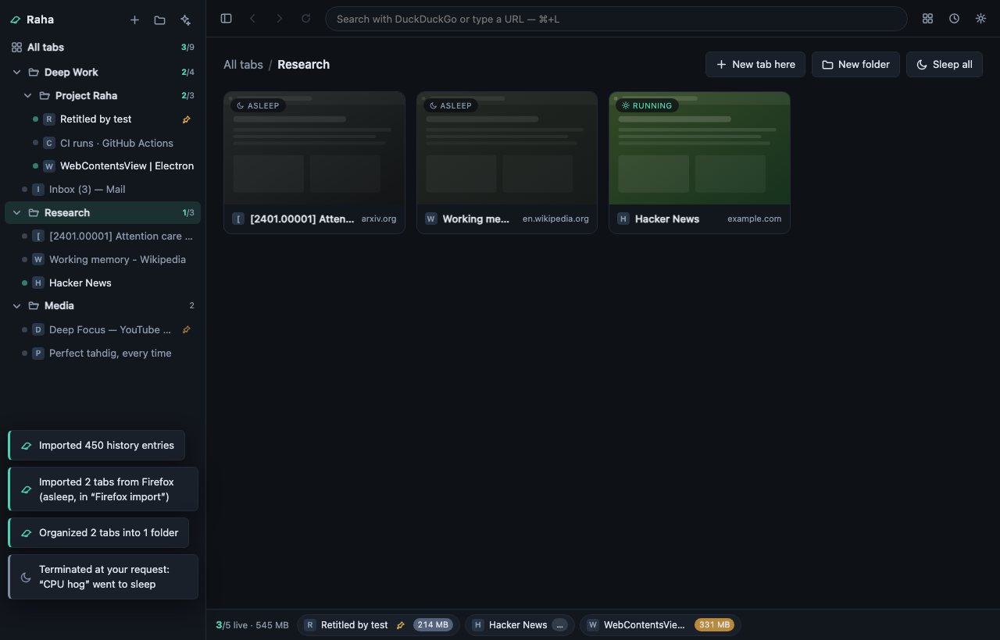

Raha
A free, open-source browser where you decide which tabs get to run — and how much memory each one may spend.
Raha (رها) is Persian for “free, released, let go”.
Auto-detected and not always right — all downloads below.

What you control
Cap what runs
Pick a number of live tabs — six, say. Everything past it goes asleep: the renderer process is destroyed and its RAM goes back to your OS, while the tab keeps its title, thumbnail and history, right where you left it. Click it and it’s back.
Set the memory
Give *.slack.com an 800 MB allowance and it sleeps when it goes over. Pin the tabs that must stay alive; tabs playing audio are kept by default. The live bar shows what each running tab actually costs, sampled from the OS.
Keep it yours
GPL-3.0, and deliberately no build step: clone it, npm start, and keep developing it on your own machine. No account, no subscription, no telemetry.
How the governor decides, what Raha does and doesn’t send, the security audit and the whole keyboard map: the details.
Download
Version v0.1.0 · not code-signed yet, so the first launch takes one extra click.
for this machine
macOS 13 or later
Which Mac? Apple menu → About This Mac: “Chip Apple M…” is Apple Silicon, “Processor Intel…” is Intel. The wrong one won’t open (macOS says it “needs to be updated”). First open: right-click the app → Open.
for this machine
Windows
SmartScreen may interpose on the unsigned installer: More info → Run anyway.
for this machine
Linux
AppImage: chmod +x Raha-*.AppImage and run — or sudo apt install ./raha-*.deb.
Every file lives on the GitHub release page, with checksums.
# or run it from source and keep going from there (Node ≥ 22)
git clone https://github.com/Magronox/raha-browser
cd raha-browser
npm install
npm start